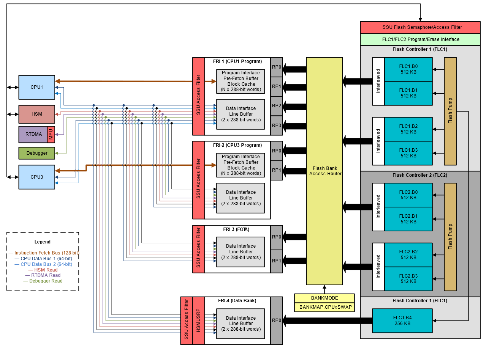
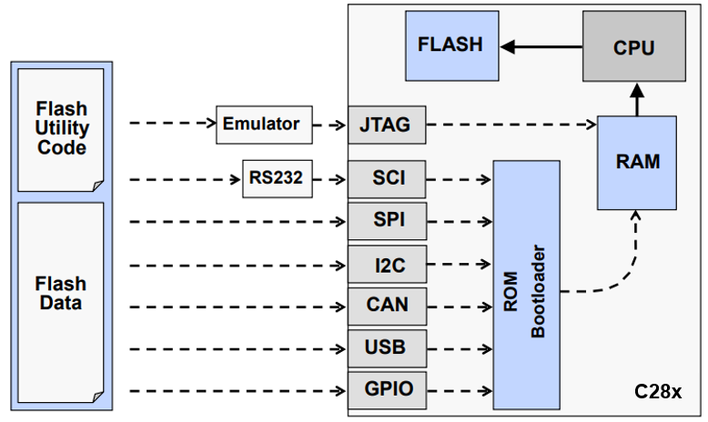

Flash Memory#
Overview#
In this module, you will learn about Flash memory and how it works, the design and organization of Flash memory in C29x devices, and the basics of erasing, programming, reading and executing code from Flash memory. You will also learn how to properly configure Flash memory for your system, improve performance, and take advantage of the error correction features for safety.
Introduction#
Flash is electrically erasable and programmable non-volatile memory. Flash is primarily used for storing program code, and can also be used to store static data that needs to be preserved between power cycles or resets. In a typical deployed application, code executes mostly directly out of Flash, although some functions may be copied to RAM and executed from there- to maximize performance, or to run on CPUs that do not have direct Flash access. While Flash memory can be read directly using a CPU instruction or data bus interface, writing data to Flash involves special operations (erase and program) that are managed by special state machine logic and cannot be done using direct memory store instructions, unlike RAM.
Flash Subsystem Overview#
The diagram below shows an overview of the C29x Flash subsystem and its various components. At the heart of the C29x Flash subsystem are one or more Flash Controllers. These house the Flash memory banks, and interface between the rest of the system and the Flash banks, providing a simple interface for programming and erasing Flash memory. For example, in the F29H85x device, there are two Flash controllers named FLC1 and FLC2.
Additionally, there are up to four Flash Read Interfaces, or FRIs. Each FRI provides an interface for various initiators to read and execute code from Flash memory. The FRI provides a memory address region for reading Flash, and includes buffer and cache mechanisms designed to maximize performance.


Figure 1: Flash Subsystem Block Diagram#
Flash Banks and Pumps#
Each C29x device has a number of Flash program code banks, and can also include a data bank. Each Flash bank stores code or data as 128-bit Flash words, plus 16 bits of ECC (error correction code) per Flash word. To maximize execution performance on the C29 CPU, each group of two code banks is interleaved to form a bank pair, enabling 256-bit instruction fetches. The data bank is a single bank and does not require interleaving, since C29 data buses are 64 bits wide. The C29x Flash API library automatically handles the addressing and interleaving of code banks when programming or erasing, so this interleaving architecture is transparent to the user. For naming purposes, each bank or bank pair is referred to by the Flash controller name and bank numbers. Banks are numbered starting with 0. For example:
FLC2.B0/B1 is the first interleaved pair of banks in Flash Controller 2
FLC1.B4 is the fifth non-interleaved bank in Flash Controller 1 (data bank)
Each bank is divided into the following regions:
MAIN: This region is the primary storage region for the Flash bank. MAIN is used to store application code and data.
SECCFG: This region contains application security policy settings and some other device configuration items, such as the boot configuration. Security policy settings are loaded by the boot ROM into the Safety and Security Unit (SSU) during runtime.
BANKMGMT: This region is used to manage firmware updates, enabling schemes such as Firmware Over-The-Air update (FOTA) or Live Firmware Update (LFU). With this feature, “A/B swap” becomes possible - that is, code can execute out of one half of the Flash while the other half is being updated; and then the two halves are swapped so that the new code version can run out of the updated half. The BANKMGMT region contains information about the bank mode, as well as software version information to be used by the update tool to manage or prevent rollbacks to previous versions.
Flash Read Interfaces#
The C29x Flash subsystem includes up to four Flash Read Interface modules (FRI-n). These modules provide a means for the various initiators on the system to perform code instruction fetch and data read operations on Flash memory. These initiators include:
C29 CPUs: Each CPU has one 128-bit instruction fetch bus, and two 64-bit data buses. In the C29x architecture, only primary CPUs (odd-numbered) have access to Flash memory. For example, on F29H85x devices, CPU1 and CPU3 have Flash access, but CPU2 does not.
RTDMA: The primary Real-Time DMA module can perform 64-bit data reads of Flash memory.
HSM: The Hardware Security Manager can perform 32-bit reads of Flash memory using the HSM_TO_SOC bus.
Debug Interface: A connected debugger can perform data read accesses to Flash memory locations.
Each Flash read interface is addressable through one or more Flash read ports. Because of bank interleaving, support for multiple CPUs, and support for updates with A/B swapping, Flash code banks on C29x devices do not have a fixed mapping to CPU address space. Instead, each read port has a fixed address range, but can be mapped to a different region of Flash depending on the current system configuration. The Flash Read Interfaces present in a C29x device are:
FRI-1 (CPU1 Program): This FRI is connected to the instruction fetch bus of CPU1, and is primarily used for executing code on CPU1. FRI-1 can also be used by any initiator to perform a data read operation.
FRI-2 (CPU3 Program): On 3-CPU or 4-CPU devices, FRI-2 is connected to the instruction fetch bus of CPU3, and is primarily used for executing code on CPU3. Like FRI-1, FRI-2 can also be used by any initiator to read data out of the Flash regions connected to it.
FRI-3 (Update Region): This FRI provides an address range for programming and verifying firmware updates into the second half of Flash memory, while the current application continues to execute from FRI-1 (and FRI-2 if present). It is not possible to execute code from FRI-3; only data reads are possible.
FRI-4 (Data Bank): This FRI is exclusively used for the data bank (FLC1.B4), and does not have an instruction fetch interface.
Note that Flash read interfaces cannot be configured using code that is executing from the same interface. To ensure FRI configuration is successful, it is best to run the code that configures it from RAM. For more details on how to configure the FRI, see the device technical reference manual.
Bank Modes and Swapping#
The BANKMODE setting determines how Flash memory is allocated to the primary C29 CPUs in the system, and whether the bank swapping feature is enabled for firmware updates. BANKMODE is stored in the BANKMGMT region of the active bank pair at boot time. To change the BANKMODE setting, use the C29x Flash plug-in or UniFlash tool.
The available bank mode options are described in the table below:
BANKMODE |
Flash Mapping |
Swap Enabled |
1-CPU Devices |
|---|---|---|---|
0 |
All program Flash mapped to CPU1 |
No |
Available |
1 |
All program Flash mapped to CPU1 |
Yes |
Available |
2 |
Program Flash memory is split between CPU1 and CPU3 |
No |
N/A |
3 |
Program Flash memory is split between CPU1 and CPU3 |
Yes |
N/A |
Flash Wait States#
Flash banks run at a slower clock frequency than the maximum clock frequency supported by the CPU. Thus, when a read access is performed to Flash memory, the data is returned after a number of wait states, defined as (RWAIT + 1). The RWAIT parameter is configured in the FRDCNTL register of the Flash Read Interface. At boot time, RWAIT is set to the optimal value for the maximum CPU frequency. It can be reconfigured by the application to a higher or lower value if required. See the device technical reference manual for more details on how to configure RWAIT.
Speeding Up Execution in Flash#
To prevent the CPU from stalling while waiting for new instructions to be fetched from Flash, each FRI that supports Flash execution includes a prefetch mechanism and block cache. These mechanisms are disabled by default at boot, and must be enabled by the application at startup.
The Prefetch Mechanism performs look-ahead prefetches of CPU instructions, starting from the next Flash word after the last instruction fetch. Each instruction fetch to Flash memory reads out a total of 256 bits (two interleaved 128-bit words). These are stored in the buffer, and then up 128 bits are sent to the CPU at a time. The buffer continues to fetch until it is full, and operates as a FIFO (first-in-first-out).
The Block Cache is an additional performance enhancement mechanism that sits between the prefetch mechanism and the Flash banks. This module is designed to enhance the performance of short execution loops by detecting discontinuity instructions (such as a branch) and then servicing them with instructions already in the cache if present, instead of initiating a new access to the Flash bank.
Speeding Up Data Reads from Flash#
Each Flash Read Interface also includes a 256-bit data line buffer. When enabled, the line buffer pre-stores 256 bits of data, enabling faster reads of large portions of data stored in Flash.
Error Correction Code (ECC)#
C29x devices feature an end-to-end safety architecture, with ECC logic built in to the C29 CPU. When a Flash read operation is performed, ECC check bits are sent along with the data bits onto the CPU program or data bus. The CPU automatically checks incoming instructions and data using the ECC bits, correcting single-bit errors and generating a fault for double-bit (uncorrectable) errors. These errors generate events to the Error Signaling Module (ESM), which in turn can generate a regular interrupt or a non-maskable interrupt (NMI) depending on the severity of the error.
Each 64 bits of data stored in Flash has 8 bits of ECC associated with it. For each 128-bit Flash word, there are two ECC codes for a total of 16 bits.
Flash Erase and Program#
Flash memory can be programmed either by using the CCS Flash plug-in or by using the UniFlash application. If these methods are not feasible in an application, the Flash API can be used. The recommended flow for programming Flash is:
Erase
Program
Verify
The SSU can restrict what code is permitted to perform Flash erase and program operations, depending on the current security policy settings. By default, there are no restrictions, but users can enable these restrictions depending on the system requirement. See the SSU chapter of the device technical reference manual for more details.
Flash Programming Basics#
The device CPU performs the flash programming
The CPU executes flash utility code from RAM that reads the flash data and writes it into the flash memory
We need to get the flash utility code and the flash data into RAM

Note:
The figure above displays common boot modes such as SPI, UART, etc. that may not all apply for your specific device. To find the boot mode options available for your device refer to the table ‘All Available Boot Modes’ within your device’s Technical Reference Manual.
Minimum Steps to Program Flash#
Algorithm |
Function |
|---|---|
Erase |
Set all bits to one |
Program |
Program selected bits with zero |
Verify |
Verify flash contents |
Minimum Erase size is a sector
Minimum Program size is a bit (be careful of ECC matching)
Important not to loose power during erase step
Chance of this happening is quite small (erase step is performed sector by sector)
Flash Programming Utilities#
JTAG Emulator Based
CCS on-chip Flash programmer (Tools → On-Chip Flash)
CCS UniFlash (TI universal Flash utility)
BlackHawk Flash utilities (requires Blackhawk emulator)
Elprotronic FlashPro2000
SCI Serial Port Bootloader Based
CodeSkin C2Prog
Elprotronic FlashPro2000
Production Test/Programming Equipment Based
BP Microsystems programmer
Data I/O programmer
Build your own custom utility
Can use any of the ROM bootloader methods
Can embed flash programming into your application
Flash API algorithms provided by TI
For a complete list of third party flash programming tools refer to C2000-3P-SEARCH
Flash Endurance#
Flash memory can be erased and reprogrammed many times. However, because of the inherent nature of Flash technology, erase operations can become progressively slower over time, and there is a maximum number of write/erase cycles that can be performed over the lifetime of the product. For details on Flash write/erase endurance specifications, see the device data sheet.
Test Your Knowledge!#
Question 1
Which of these is not stored in the SECCFG region?
a. Firmware update version
b. Application security policy
c. Boot configuration
Answer
a. Firmware update version
Question 2
True or False? It is possible to execute code out of the FRI-3 address region.
Answer
False
Question 3
Which of these methods cannot be used to program data into Flash memory?
a. Code Composer Studio plug-in
b. 3rd party programmers
c. CPU memory store instructions
Answer
c. CPU memory store instructions
Question 4
True or False? The Flash Read Interface includes ECC logic for detecting errors in Flash memory reads.
Answer
False
Summary#
Flash memory is the primary nonvolatile memory in C29x devices. It is primarily used to store program code, but can also be used as a static data store. The C29x Flash subsystem has the following key features:
Interleaving of Flash code banks for C29 code execution performance
Multiple Flash read interfaces to support different CPUs, firmware update with A/B swap, and data bank access
A prefetch mechanism, block cache, and data cache mechanisms to enhance performance
Flash Controller logic to simplify the program and erase process.